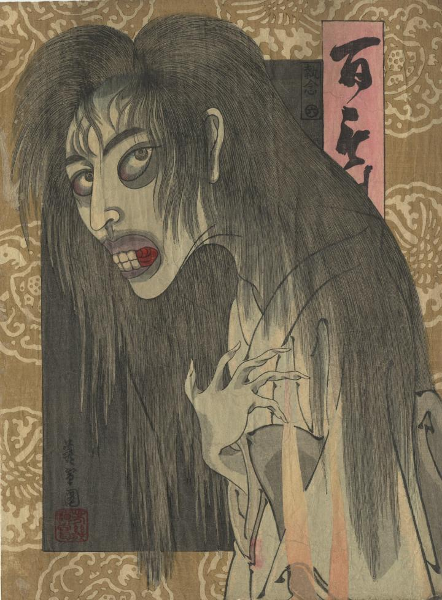

幽霊が現われている。大きな目がぎょろっとにらみ、口は前歯のみ生えており、抜けている歯の隙間から口の中がみえる。髪が長く、白い着物を着ている。
著作者：芳幾／出典：親書誌：U426_nichibunken_0416：百もの語 執念；ヒャクモノガタリ シュウネン／日付：2015／資源識別子：U426_nichibunken_0416_0001_0000
Copyright (c)2010- International Research Center for Japanese Studies, Kyoto, Japan. All rights reserved.